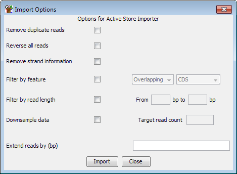

Reimporting Existing Data (Visible Data Stores)
Under some circumstances you may wish to reimport a data store which you already
have loaded in your current SeqMonk project. You might want to do this to apply
one of the import modification options (removing duplicates, extending reads,filtering
etc) to a data set which you didn't initially modify, or you might want to convert
a data group into a dataset.
To reimport a data store simply make it visible in the chromsome view and then select
File > Import Data > Visible Data Stores. You will see the standard
options for single end data import, along with some re-import specific options.
Once re-imported you will have a new data set for each visible data store and
this new data will have those options applied.
The new data set will have the same name as the original
data store, but with "_reimport" appended to it.

Options
Generally the options you have when re-importing are the same as you'd see when
importing data from a traditional data source (BAM file etc). There are a few
useful additional options though.
HiC data
-
If the data store you are re-importing is a HiC data store then you will have the
option to either keep this as a HiC dataset, or convert it to a standard dataset
(losing the HiC linkage information). If you keep the data as HiC you can opt
to ignore reads with paired distances shorter than a cutoff you supply, and you
can choose to completely remove any trans hits from the reimported data.
All data
-
You can choose to reverse all of your reads. This will change forward reads to
reverse and vice versa. Reads with no strand information will not be changed.
Please note that reversal of reads happens before the read is extended, so the
extension will effectively happen at the 3' end of the original read if both
of these options are selected.
-
You can filter the imported reads against an annotation track. You can choose
to keep only reads which overlap a feature type, or exclude those which overlap
a feature type.
-
You can filter the reads by length, so that only reads falling into the specified
size range are kept
-
You can filter the reads based on their strand. Only reads with the select strands
are kept.
-
You can downsample your data. To do this you provide a target sample size and the
program randomly filters your data to try to achieve this. The program applies
a fixed probability of being kept on every read it imports. This means that the
final data size will not necessarily be exactly what you specified, but it should
be very close.
-
You can choose to extend your reads. This is a standard import option, but the
reimport filter lets you do one extra trick which is to specify a negative extension
size. This can be useful if, for example you want to analyse only the start positions
of all reads. The negative extension will never truncate past the start of a read
so it's safe to enter a very high negative value if you just want the first base.